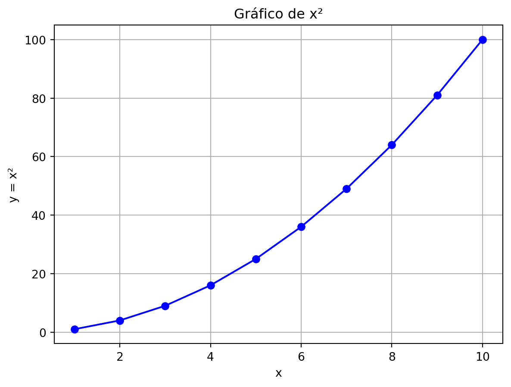
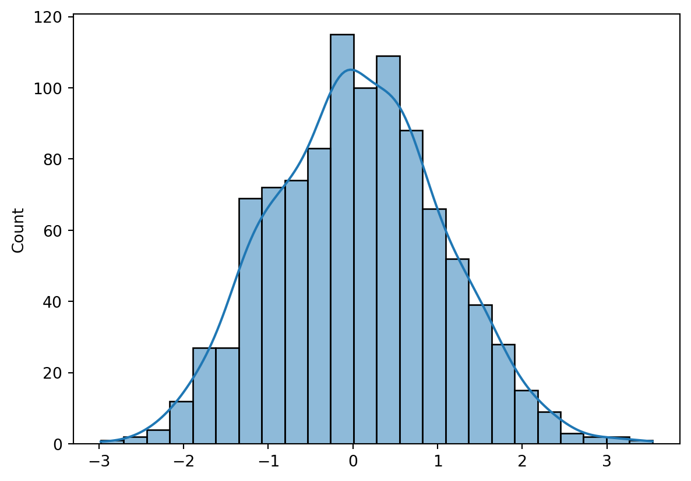
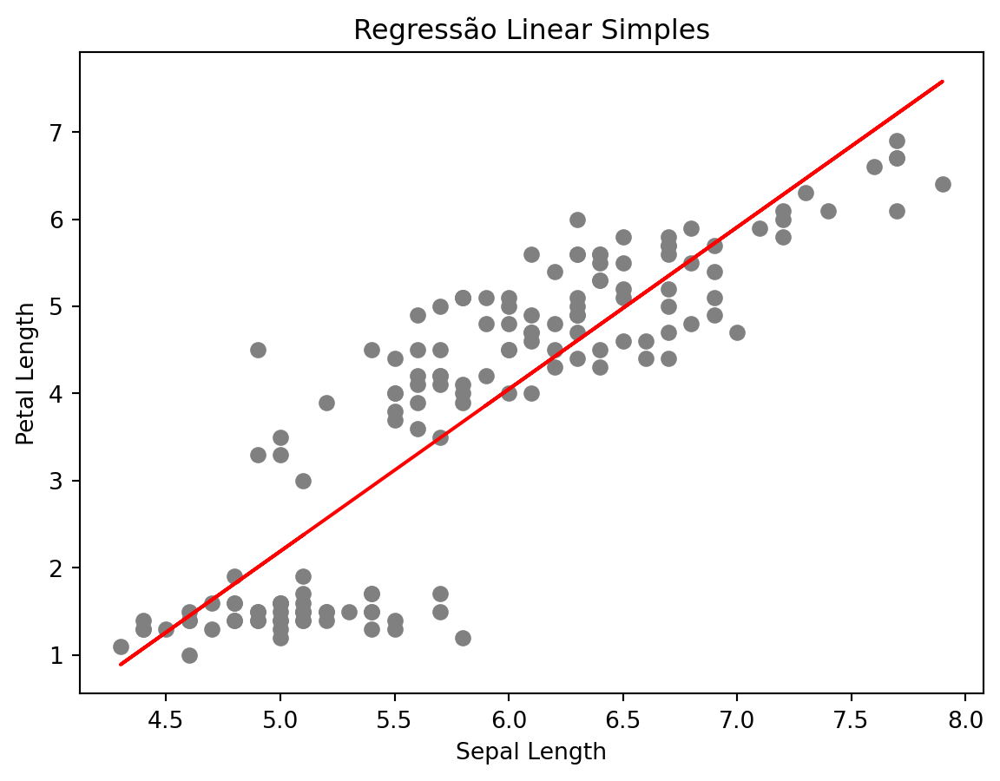

x = list(range(1, 11))
y = [i**2 for i in x]
y[1, 4, 9, 16, 25, 36, 49, 64, 81, 100]← Voltar para a Seção de Python
← Voltar para a Seção de Programação

O Quarto permite a execução direta de blocos de código Python em arquivos .qmd, tornando possível criar relatórios interativos e reprodutíveis com análises, gráficos e visualizações em Python.
O trecho abaixo é o cabeçalho YAML do documento .qmd, que define título, autor, data, formato de saída e opções de execução do código:
---
title: "Modelos de Código em Python para Usar com Quarto"
author: "Blog do Marcellini"
date: 2025-06-23
format: html
editor: visual
lang: pt-BR
execute:
echo: true
warning: false
message: false
---O Quarto permite a execução direta de blocos de código Python em arquivos .qmd, tornando possível criar relatórios interativos e reprodutíveis com análises, gráficos e visualizações em Python.
x = list(range(1, 11))
y = [i**2 for i in x]
y[1, 4, 9, 16, 25, 36, 49, 64, 81, 100]import matplotlib.pyplot as plt
plt.plot(x, y, marker='o', color='blue')
plt.title("Gráfico de x²")
plt.xlabel("x")
plt.ylabel("y = x²")
plt.grid(True)
plt.show()
import numpy as np
import seaborn as sns
data = np.random.normal(size=1000)
sns.histplot(data, kde=True)
import pandas as pd
df = pd.read_csv("https://raw.githubusercontent.com/mwaskom/seaborn-data/master/iris.csv")
df.head()| sepal_length | sepal_width | petal_length | petal_width | species | |
|---|---|---|---|---|---|
| 0 | 5.1 | 3.5 | 1.4 | 0.2 | setosa |
| 1 | 4.9 | 3.0 | 1.4 | 0.2 | setosa |
| 2 | 4.7 | 3.2 | 1.3 | 0.2 | setosa |
| 3 | 4.6 | 3.1 | 1.5 | 0.2 | setosa |
| 4 | 5.0 | 3.6 | 1.4 | 0.2 | setosa |
df.describe()| sepal_length | sepal_width | petal_length | petal_width | |
|---|---|---|---|---|
| count | 150.000000 | 150.000000 | 150.000000 | 150.000000 |
| mean | 5.843333 | 3.057333 | 3.758000 | 1.199333 |
| std | 0.828066 | 0.435866 | 1.765298 | 0.762238 |
| min | 4.300000 | 2.000000 | 1.000000 | 0.100000 |
| 25% | 5.100000 | 2.800000 | 1.600000 | 0.300000 |
| 50% | 5.800000 | 3.000000 | 4.350000 | 1.300000 |
| 75% | 6.400000 | 3.300000 | 5.100000 | 1.800000 |
| max | 7.900000 | 4.400000 | 6.900000 | 2.500000 |
sns.scatterplot(data=df, x="sepal_length", y="petal_length", hue="species")
from sklearn.linear_model import LinearRegression
X = df[["sepal_length"]]
y = df["petal_length"]
modelo = LinearRegression()
modelo.fit(X, y)
print(f"Coeficiente angular: {modelo.coef_[0]:.2f}")
print(f"Intercepto: {modelo.intercept_:.2f}")Coeficiente angular: 1.86
Intercepto: -7.10plt.scatter(X, y, color='gray')
plt.plot(X, modelo.predict(X), color='red')
plt.xlabel("Sepal Length")
plt.ylabel("Petal Length")
plt.title("Regressão Linear Simples")
plt.show()
from tabulate import tabulate
tabela = df.head(5)
print(tabulate(tabela, headers='keys', tablefmt='github'))| | sepal_length | sepal_width | petal_length | petal_width | species |
|----|----------------|---------------|----------------|---------------|-----------|
| 0 | 5.1 | 3.5 | 1.4 | 0.2 | setosa |
| 1 | 4.9 | 3 | 1.4 | 0.2 | setosa |
| 2 | 4.7 | 3.2 | 1.3 | 0.2 | setosa |
| 3 | 4.6 | 3.1 | 1.5 | 0.2 | setosa |
| 4 | 5 | 3.6 | 1.4 | 0.2 | setosa |Com Quarto e Python, é possível gerar relatórios e documentos ricos em conteúdo visual e analítico, integrando texto, código, gráficos e resultados de forma automatizada e elegante.
← Voltar para a Seção de Python
← Voltar para a Seção de Programação
Criado por Blog do Marcellini com ❤️ e código.